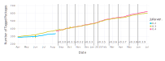
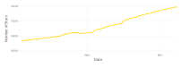
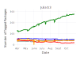
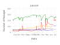
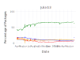
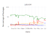

Julia Package Ecosystem Pulse
Last updated 2015-06-27
Total number of packages by Julia version

* Showing only packages with at least one tagged version in METADATA.jl
METADATA changes in last 14 days
14 new, 49 updated
| AutoHashEquals | 0.0.4 | |
| Chipmunk | 0.0.3 | |
| ColorTypes | 0.0.1 | |
| FixedEffectModels | 0.0.1 | |
| FixedSizeArrays | 0.0.2 | |
| GeoInterface | 0.0.1 | |
| GeometryTypes | 0.0.1 | |
| ImplicitEquations | 0.0.1 | |
| LibGEOS | 0.0.2 | |
| OEIS | 0.0.1 | |
| Parameters | 0.0.1 | |
| RandomFerns | 0.0.2 | |
| SerialPorts | 0.0.1 | |
| VarianceComponentTest | 0.1.2 | |
| Bootstrap | 0.2.0 → | 0.3.0 |
| CRC | 1.0.1 → | 1.1.0 |
| Cairo | 0.2.27 → | 0.2.28 |
| Compat | 0.4.5 → | 0.4.6 |
| Convex | 0.0.5 → | 0.0.6 |
| DataArrays | 0.2.15 → | 0.2.16 |
| DecisionTree | 0.3.7 → | 0.3.8 |
| Dierckx | 0.1.4 → | 0.1.5 |
| Discretizers | 0.0.1 → | 0.0.2 |
| Docile | 0.5.5 → | 0.5.10 |
| Elly | 0.0.1 → | 0.0.2 |
| Escher | 0.0.1 → | 0.0.3 |
| Evolutionary | 0.1.0 → | 0.1.2 |
| EvolvingGraphs | 0.0.3 → | 0.0.5 |
| FactCheck | 0.2.7 → | 0.2.8 |
| GR | 0.9.4 → | 0.9.7 |
| GraphViz | 0.0.3 → | 0.0.4 |
| Graphs | 0.5.4 → | 0.5.5 |
| Gtk | 0.8.1 → | 0.8.2 |
| ImageView | 0.1.14 → | 0.1.15 |
| Lexicon | 0.1.10 → | 0.1.11 |
| MATLAB | 0.2.2 → | 0.2.3 |
| MathProgBase | 0.3.11 → | 0.3.12 |
| MatpowerCases | 0.1.0 → | 0.2.1 |
| Meshes | 0.0.4 → | 0.1.0 |
| MetadataTools | 0.1.0 → | 0.2.0 |
| Morsel | 0.0.5 → | 0.0.6 |
| MsgPack | 0.0.2 → | 0.0.4 |
| NLsolve | 0.3.1 → | 0.3.3 |
| Neovim | 0.0.1 → | 0.0.2 |
| PEGParser | 0.1.0 → | 0.1.2 |
| ParserCombinator | 1.1.4 → | 1.2.0 |
| ProtoBuf | 0.1.0 → | 0.1.1 |
| QuantEcon | 0.1.0 → | 0.1.2 |
| ReverseDiffSparse | 0.2.7 → | 0.2.9 |
| SCS | 0.0.3 → | 0.0.5 |
| SFML | 0.0.6 → | 0.0.8 |
| Stochy | 0.0.1 → | 0.0.2 |
| TOML | 0.2.0 → | 0.3.0 |
| TaylorSeries | 0.0.3 → | 0.1.0 |
| TikzPictures | 0.2.1 → | 0.2.2 |
| TimeSeries | 0.5.9 → | 0.5.10 |
| Tk | 0.3.3 → | 0.3.4 |
| ValidatedNumerics | 0.0.3 → | 0.1.0 |
| Vega | 0.3.1 → | 0.3.3 |
| VideoIO | 0.0.13 → | 0.0.14 |
| WORLD | 0.1.1 → | 0.1.2 |
| WinRPM | 0.1.7 → | 0.1.9 |
| YAML | 0.1.8 → | 0.1.9 |
Stars
"Stars" are something you can give a package on Github. This plot is the total number of stars across all packages.

Testing status changes




| Version | Tests pass | Tests fail | No tests | Package untestable | Total |
| Julia 0.3 | 379 (63%) | 61 (10%) | 107 (18%) | 53 (9%) | 600 |
| Julia 0.4 | 256 (41%) | 201 (32%) | 108 (17%) | 54 (9%) | 619 |
Julia 0.3
2015-06-27- CPUTime: tests_pass → tests_fail.
- Dates: tests_fail → tests_pass.
- FixedEffectModels: new → tests_pass.
- HTTPClient: tests_fail → tests_pass.
- MetadataTools: tests_fail → tests_pass.
- StreamStats: tests_fail → tests_pass.
- Dates: tests_pass → tests_fail.
- HTTPClient: tests_pass → tests_fail.
- ImplicitEquations: tests_pass → tests_fail.
- StreamStats: tests_pass → tests_fail.
- ForwardDiff: tests_fail → tests_pass.
- Optim: tests_fail → tests_pass.
- Stochy: tests_fail → tests_pass.
- ForwardDiff: tests_pass → tests_fail.
- GeoInterface: new → tests_pass.
- LibGEOS: new → tests_fail.
- MachineLearning: tests_fail → tests_pass.
- Optim: tests_pass → tests_fail.
- StochasticSearch: tests_fail → tests_pass.
- Stochy: tests_pass → tests_fail.
- ForwardDiff: tests_fail → tests_pass.
- MachineLearning: tests_pass → tests_fail.
- StochasticSearch: tests_pass → tests_fail.
Julia 0.4
2015-06-27- Calculus: tests_fail → tests_pass.
- Compat: tests_fail → tests_pass.
- Distances: tests_fail → tests_pass.
- Escher: tests_fail → tests_pass.
- FixedEffectModels: new → tests_pass.
- GR: tests_fail → tests_pass.
- GraphCentrality: tests_fail → tests_pass.
- Graphs: tests_fail → tests_pass.
- Gtk: tests_fail → tests_pass.
- HTTPClient: tests_fail → tests_pass.
- IPNets: tests_fail → tests_pass.
- ImageQuilting: tests_fail → tests_pass.
- ImageView: tests_fail → tests_pass.
- Images: tests_fail → tests_pass.
- JLDArchives: tests_fail → tests_pass.
- Jumos: tests_pass → tests_fail.
- LLLplus: tests_fail → tests_pass.
- Markdown: tests_pass → tests_fail.
- MatrixMarket: tests_pass → tests_fail.
- MetadataTools: tests_fail → tests_pass.
- NLsolve: tests_pass → tests_fail.
- Reactive: tests_fail → tests_pass.
- ReverseDiffSparse: tests_fail → tests_pass.
- SCS: tests_fail → tests_pass.
- SerialPorts: tests_pass → tests_fail.
- SystemImageBuilder: tests_pass → tests_fail.
- TikzGraphs: tests_fail → tests_pass.
- Tk: tests_fail → tests_pass.
- Winston: tests_fail → tests_pass.
- Chipmunk: tests_fail → tests_pass.
- HTTPClient: tests_pass → tests_fail.
- ImplicitEquations: tests_pass → tests_fail.
- NLsolve: tests_fail → tests_pass.
- CoinOptServices: tests_fail → tests_pass.
- DataArrays: tests_fail → tests_pass.
- JuMP: tests_fail → tests_pass.
- MatrixMarket: tests_fail → tests_pass.
- NLsolve: tests_pass → tests_fail.
- Chipmunk: new → tests_fail.
- GeoInterface: new → tests_pass.
- LibGEOS: new → tests_fail.
- NLsolve: tests_fail → tests_pass.
- Benchmark: tests_pass → tests_fail.
- Calculus: tests_pass → tests_fail.
- CoinOptServices: tests_pass → tests_fail.
- Compat: tests_pass → tests_fail.
- Distances: tests_pass → tests_fail.
- Escher: tests_pass → tests_fail.
- Evolutionary: tests_fail → tests_pass.
- FactorModels: tests_pass → tests_fail.
- GLMNet: tests_pass → tests_fail.
- Gtk: tests_pass → tests_fail.
- ImageView: tests_pass → tests_fail.
- Images: tests_pass → tests_fail.
- JuMP: tests_pass → tests_fail.
- LLLplus: tests_pass → tests_fail.
- Lasso: tests_pass → tests_fail.
- Lumira: tests_pass → tests_fail.
- MatrixDepot: tests_fail → tests_pass.
- NLsolve: tests_pass → tests_fail.
- Reactive: tests_pass → tests_fail.
- Rif: tests_pass → tests_fail.
- StackedNets: tests_pass → tests_fail.
- Tk: tests_pass → tests_fail.
- UAParser: tests_pass → tests_fail.
- Winston: tests_pass → tests_fail.